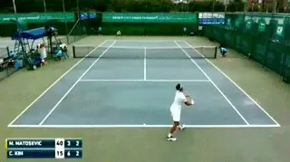
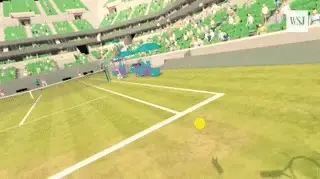

Future Trends in Tennis - Part 3¶
Future Trends in Tennis:\ Part 3Chris Lewit
In the last article I looked at the concept of what I call \"ambiplayers\" and what their strokes might look like now and in the future. (link.) Now let's turn to the issue of advances in technology in several areas, starting with so-called smart courts.

The End of Cheating?
Due to the increased prevalence and the cost reduction in electronic line calling systems such as Playsight and Hawkeye, cheating could finally be eliminated from the game at all levels. This will be especially important to the growth and popularity of the junior competitive circuit, which currently has rampant cheating.
At all competitive levels, electronic and computer assisted line calling could eventually replace all humans including umpires and lines judges. First the line judges would go and then---later on---the umpires too.

Will on court coaching become universal---and even become more advanced?
Smart court systems could eliminate cheating for recreational players as well. It could become rare to play on a non \"smart\" court, as most courts everywhere could eventually be equipped with smart sensors and cameras enabling better fairer match play. This is just part of the larger trend known as the \"Internet of Things,\" a phenomenon where common everyday devices are getting smarter and connected to allow data connectivity.
On Court Coaching
On court coaching has been debated for years in the tennis community but the debate will likely end as it becomes more and more accepted. On court coaching is already becoming more prevalent at many levels of the game, from the WTA Tour to new junior circuits like the Global Junior Tour and the ITF Junior Circuit, which approved on court coaching for the 2018 tournament schedule.

Hyberbaric chambers are used by players such as Novak Djokovic to boost recovery.
But could on court coaching become \"virtual\" by using technology as simple as a cell phone on changeovers? The coach could communicate with players even if he or she was watching remotely.
What about direct communication between players and coaches during matches with players wired with earphones the way the NFL allows coaches to speak directly to quarterbacks with ear phones in helmets?
Recovery
What about recovery technology?
Novak Djokovic is known for using a controversial hyperbaric chamber called a CVAC to boost his recovery. A CVAC uses a computer-controlled valve and a vacuum pump to simulate high altitude and compress the muscles at rhythmic intervals.
The company claims that spending up to 20 minutes in the chamber three times a week can improve athletic performance by improving circulation, boosting oxygen rich red blood cells, removing lactic acid, and possibly even stimulating stem cell production.
But is it fair that Djokovic can afford treatments in this \$75,000 device while others cannot? Will that be deemed an illegal advantage?

Could prosthetics produce better performance than human limbs?Engineering
Another issue. Generic engineering and advances in pharmacology and machine enhancement of the human body could improve dramatically. These would also raise many questions about what is fair play and what is legal.
To take one example, if an amputee uses a prosthetic that gives him or her better performance than the original limb, is it fair to allow that player to compete with other non-enhanced players?
What happens when genetic engineering allows for customized enhancement of athleticism traits pre-birth or post-birth? Is it fair to allow a genetically modified athlete to compete against non-modified athletes?
Video Technologies
High-speed video analysis has transformed technical analysis and the understanding of the game at all levels by allowing us to see key moments in strokes that are literally invisible to the human eye. The work of pioneers like John Yandell and Brian Gordon have busted myths and heralded a new era in technical development. You can find extensive articles on Tennisplayer from John (link) and from Brian (link.)
These trends will continue unabated and coaches will become more educated and knowledgeable about biomechanics and stroke design. For example Brian is now beta testing a new 3D measurement system that may give precise quantitative data without attaching markers to players, making it possible to measure strokes in actual match play.

High speed allows us to see key positions in strokes that are invisible to the naked eye.Tagging
A lesser known trend is the use of video tagging technology, and resulting statistical analysis to spot tactical patterns and to scout and build profiles of players. There has been an explosion in the power of big data collection and analysis and it is already a factor for top competitors on the pro tours.
For example, at present some top players are rumored to be buying the rights to their own statistical data on patterns and strategy for six-figure sums. This is a brave new world on the tour and the power of analytics will likely continue to shape the tour in unforeseen ways in the future.
For coaches, analytics will be used more prominently in working with players and helping them master their best patterns of play on the practice court and at tournaments. Tennis Analytics under the direction of Warren Pretorius is the leader in the field (link), and I know John is planning a series of future articles on Tennisplayer on how match tagging works and its potential benefits.
But again it raises the issue of who can afford what and are analytics creating unfair advantages?
Virtual Reality
Though video analysis and online instruction have exploded in the last decade, the technology does not yet exist to make virtual coaching a reality yet.
But as virtual reality technology improves, it is conceivable that many coaches won't have to leave the home or office to work with players. Coaches may not need a physical court or club, and may be not need to travel as extensively on circuits as in the past.

What are the potential training benefits for the future from the use of virtual reality?
Virtual reality holds the potential to transform remote coaching, perhaps in our lifetime, to the point where a coach and player could have a lesson in a virtual world and it would be just as real and effective as if they were hitting and speaking at the club. For coaches who are grinding 30 weeks a year traveling the pro or junior tour, this technology could allow them to give very close support to their player without having to physically accompany them on the road.
Elite coaches would also be able to share their knowledge more efficiently and effectively with more players around the world and at a lower price point rather than being limited by geography and time.
The future of coach education is bright, for similar reasons. Coaches will be able to access knowledge, share information, and collaborate in unprecedented ways and this will raise the level of education around the world and also raise the bar for what is expected of coaches regarding continuing education and staying up to date on teaching trends around the world.
Imagine being able to attend any conference in the world or study with your favorite legendary coach or mentor all from your home office. It could happen!
Note
The predictions in this article are meant to provoke thought and discussion. I look forward to getting feedback and other ideas from the Tennisplayer community at large. Please share your own predictions in the Forum. ([link.)